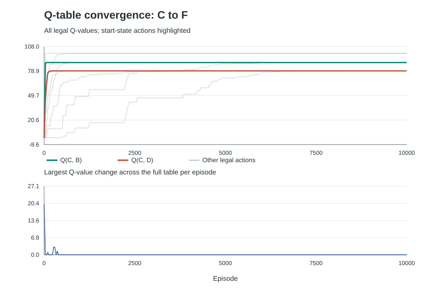
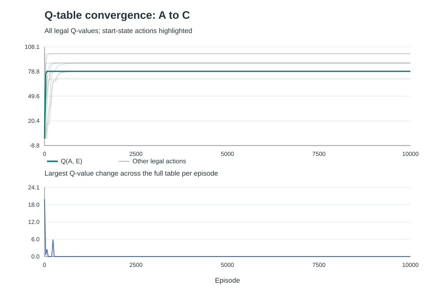

Q-learning in a Six-State Environment
The figures and Q-tables below are generated by the submitted training script. Their CSV source data is included under results/.
Environment model
The state is the robot's current region, one of A, B, C, D, E, F. An action selects an adjacent region. The selected region becomes the next state deterministically. Moves to non-adjacent regions are excluded from the available actions.
The assignment figure does not provide a formal adjacency table. This experiment uses the following explicit, bidirectional interpretation, including the direct connection between B and C:
| Current state | Adjacent states and available actions |
|---|---|
| A | E |
| B | C, D, F |
| C | B, D |
| D | B, C, E |
| E | A, D, F |
| F | B, E |
A valid move to a non-target state gives a reward of -1. A move that enters the target state gives +100 instead. Entering the target ends the episode immediately, so no action is selected from that state afterward. Each episode also has a 30-move limit; reaching the limit without the target truncates the episode and does not grant the target reward.
Experiment configurations
| Configuration | Start | Target / terminal state |
|---|---|---|
| Original | C | F |
| Changed | A | C |
Both configurations use the same adjacency, transition rule, reward values, and move limit. A target state's physical neighbors remain in the adjacency table because the target changes between experiments; its available action set is empty only while it is the current experiment's terminal state.
As a check on the declared graph, a shortest route is C → B → F in the original configuration and A → E → D → C in the changed configuration. These are deductions from the model, not training results.
Learning method and training settings
All legal state-action values start at zero. In each episode, an ε-greedy policy chooses a random legal move with probability ε and a move with the highest current Q-value otherwise; ties between best moves are broken randomly. The update is Q(s,a) ← Q(s,a) + α [r + γ max Q(s',·) - Q(s,a)]. On entry to the target, the future-value term is zero. A step-limit truncation ends collection for that episode but is not treated as a goal transition.
Both experiments use α = 0.2, γ = 0.9, 10,000 episodes, and random seed 42. ε decreases linearly from 0.4 to 0.1 over the first 12,000 episodes, so it is about 0.15 at the final episode of this run. Each episode starts at its configured start state and lasts at most 30 moves. The implementation uses only the Python standard library.
Experimental results
Each upper plot shows every legal Q-value, measured after every episode, with start-state actions highlighted. The lower plot shows the largest absolute change among all legal entries in the Q-table during that episode. A zero in the lower plot can mean that recently visited values did not change; it alone cannot prove every state-action value is optimal. The tables report action visit counts to show how much evidence supports each estimate.
Original: C to F
10,000 of 10,000 episodes reached the target. The largest single-episode Q-table change in the last 500 episodes was 2.68833e-06; the least-visited legal action was used 48 times. These observations do not establish a convergence guarantee.

results/baseline/convergence.csv.| State | Action / next state | Initial Q | Final Q | Visits |
|---|---|---|---|---|
| A | E | 0.000000 | 88.997248 | 48 |
| B | C | 0.000000 | 79.100000 | 1079 |
| B | D | 0.000000 | 79.100000 | 1131 |
| B | F | 0.000000 | 100.000000 | 9349 |
| C | B | 0.000000 | 89.000000 | 9795 |
| C | D | 0.000000 | 79.100000 | 1576 |
| D | B | 0.000000 | 89.000000 | 1764 |
| D | C | 0.000000 | 79.100000 | 292 |
| D | E | 0.000000 | 89.000000 | 724 |
| E | A | 0.000000 | 79.068752 | 48 |
| E | D | 0.000000 | 79.099991 | 73 |
| E | F | 0.000000 | 100.000000 | 651 |
Changed: A to C
10,000 of 10,000 episodes reached the target. The largest single-episode Q-table change in the last 500 episodes was 0; the least-visited legal action was used 203 times. These observations do not establish a convergence guarantee.

results/start_A_goal_C/convergence.csv.| State | Action / next state | Initial Q | Final Q | Visits |
|---|---|---|---|---|
| A | E | 0.000000 | 79.100000 | 11147 |
| B | C | 0.000000 | 100.000000 | 1683 |
| B | D | 0.000000 | 89.000000 | 207 |
| B | F | 0.000000 | 79.100000 | 207 |
| D | B | 0.000000 | 89.000000 | 940 |
| D | C | 0.000000 | 100.000000 | 8317 |
| D | E | 0.000000 | 79.100000 | 996 |
| E | A | 0.000000 | 70.190000 | 1147 |
| E | D | 0.000000 | 89.000000 | 10046 |
| E | F | 0.000000 | 79.100000 | 1153 |
| F | B | 0.000000 | 89.000000 | 1157 |
| F | E | 0.000000 | 79.100000 | 203 |